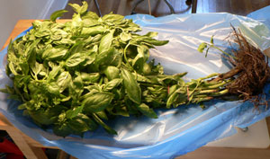
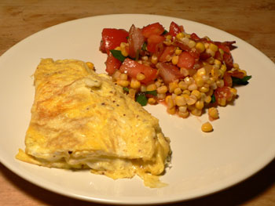

Summer salad
After spending nearly an hour exploring the greenmarket yesterday morning, which I’ve finally started doing every weekend, I returned home with a bounty of corn, tomatoes, peaches, bacon, and the biggest bunch of basil these eyes have ever seen (reminiscent of the famous collard greens episode):

At $1.50, who could resist? I don’t know how I’m going to get through it, but I suppose I should make a ton of pesto and freeze it in an ice cube tray the way Emily B’s dad does. Has anyone here made pesto without their food processor? I have a mortar and pestle and some knives, but I have no machines that blend, except my hand mixer. In the meantime, I’m putting basil in everything, including the refreshing summer salad I made last night:

The health benefits of that salad were probably erased by the bacon in it and the gruyère omelette next to it, but we did eat the leftovers for lunch today, so I can feel good about that. Anyway, the salad contained: two chopped tomatoes; four strips of the famous “really good bacon” from the market (which isn’t really good at all), cut into lardons and cooked; the shaved kernels from three steamed ears of corn; one caramelized onion; and chopped basil leaves. It needed no dressing, because the juice from the tomatoes carried the bacon flavor throughout the bowl.
Comments
I sometimes make pesto on the cutting board, basically just chopping the basil and garlic together with some salt until it forms a paste and then slowly adding oil to moisten. This probably isn’t the best way to make a large quantity but you certainly could freeze a few cubes’ worth this way. Marcella Hazan instructs you to add the cheese after defrosting and I certainly wouldn’t cross her. I would do the same with the nuts, but you could add them to mixture on the board too.
Recently on Fast Food My Way, Jacques Pepin delineated a great way to freeze pesto – he blanches basil leaves before processing them with nuts and garlic, then freezes that in little portions. You add fresh cheese when you defrost the pesto and sauce the pasta with it. Apparently, blanching keeps the basil bright green, even in the freezer.
The consensus is definitely to add the cheese at serving time. Thanks to both of you for that. Michael: I will try that method, although I’m sure I’ll make a mess and get tired.
Add a comment